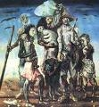
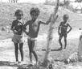

9
O núcleo da cabra é visível
debaixo do homem do nordeste.
Da cabra lhe vem o escarpado
e o estofo nervudo que o enche.
Se advinha o núcleo da cabra
no jeito de existir, Cardozo,
que reponta sob seu gesto
como esqueleto sob o cropo.
E é outra ossatura mais forte
que o esqueleto comum, de todos;
debaixo do próprio esqueleto,
no fundo centro de seus ossos.
A cabra deu ao nordestino
esse esqueleto mais de dentro:
o aço do osso, que resiste
quando o osso perde seu cimento.

*
O mediterrâneo é mar clássico,
com águas de mármore azul.
Em nada me lembra das águas
sem marca do rio Pajeú.
As ondas do Mediterrâneo
estão no mármore traçadas.
Nos rios do Sertão, se existe,
a água corre despenteada.
As margens do Mediterrâneo
parecem deserto balcão.
Deserto, mas de terras nobres
não da piçarra do Sertão.
Mas não minto o Mediterrâneo
nem sua atmosfera maior
descrevendo-lhe as cabras negras
em termos das do Moxotó.